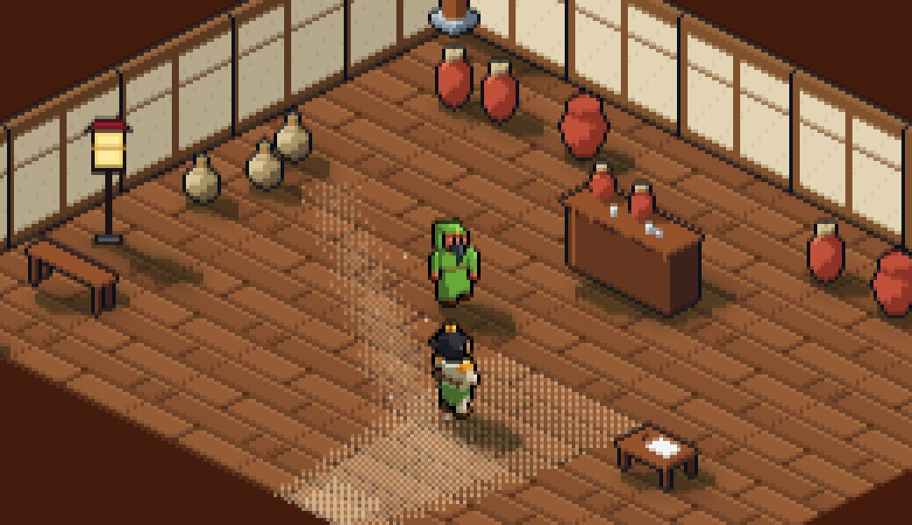
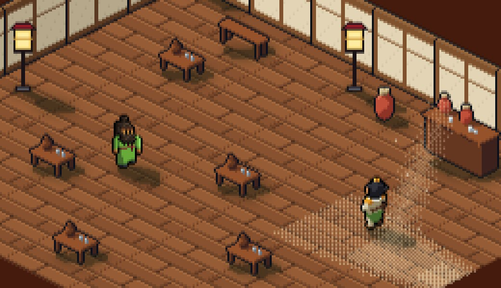
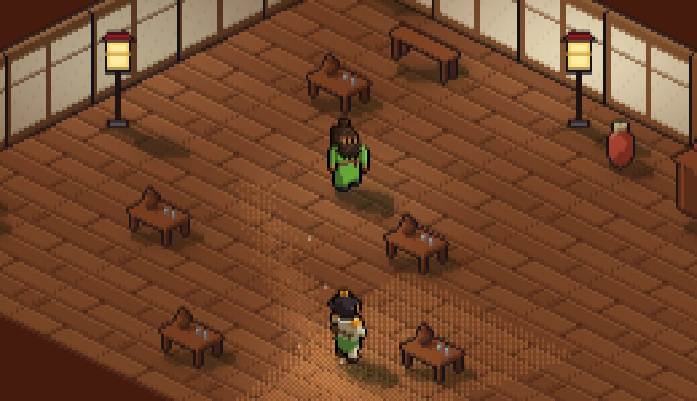
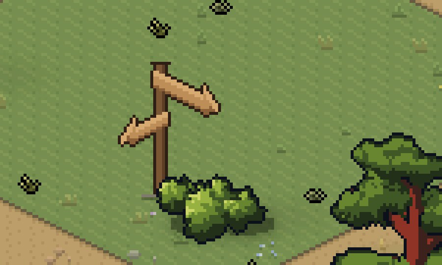
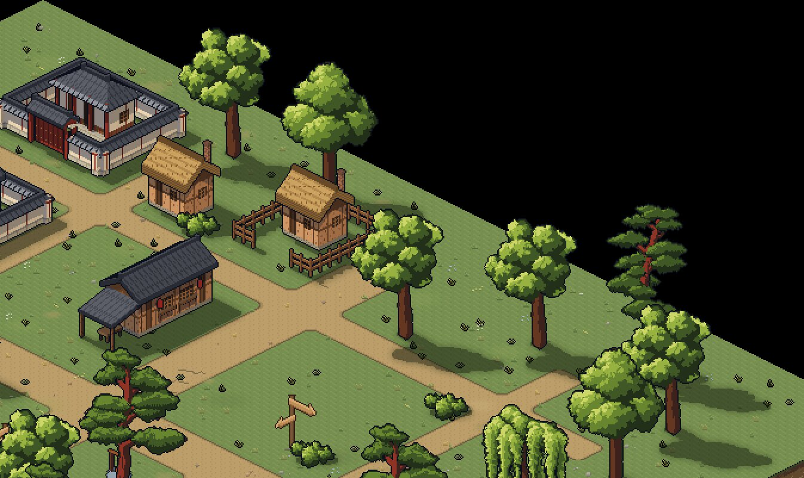

<title>문 햇빛·이정표 시안</title>
<meta name="claude:viewport-fit-sides" content="cover">
<link rel="stylesheet" href="https://fonts.googleapis.com/css2?family=Noto+Sans+KR:wght@400;600;700&display=swap">
<style>
/* 시안 그림을 크게, 각 그림 아래 한 줄 설명 */
:root{--bg:#f3efe7;--fg:#24201b;--muted:#6d665b;--line:#dbd3c4;--accent:#8a4a1c;--font:"Noto Sans KR",system-ui,sans-serif}
@media (prefers-color-scheme:dark){:root:not([data-theme="light"]){--bg:#1b1916;--fg:#ece6db;--muted:#a39c8f;--line:#3b3631;--accent:#e39a62;color-scheme:dark}}
:root[data-theme="dark"]{--bg:#1b1916;--fg:#ece6db;--muted:#a39c8f;--line:#3b3631;--accent:#e39a62;color-scheme:dark}
body{background:var(--bg);color:var(--fg);font-family:var(--font);line-height:1.6;padding-block:24px 48px;padding-left:max(16px,env(safe-area-inset-left,0px));padding-right:max(16px,env(safe-area-inset-right,0px))}
main{max-width:1100px;margin:0 auto;display:flex;flex-direction:column;gap:28px}
h1{font-size:1.6rem;margin:0}h2{font-size:1.15rem;margin:0 0 8px}p,li{max-width:78ch}ul{margin:0;padding-left:1.2em}
.grid{display:grid;grid-template-columns:repeat(2,minmax(0,1fr));gap:12px}@media (max-width:720px){.grid{grid-template-columns:1fr}}
figure{margin:0;display:flex;flex-direction:column;gap:6px}figure img{width:100%;border-radius:4px;image-rendering:pixelated}
figcaption{font-size:.9rem;color:var(--muted)}
</style>
<main>
<div><h1>문 햇빛·이정표 시안</h1><p>실내는 문으로 드는 햇빛으로 문 자리를 알리고, 마을 길 끝에는 화살표 이정표를 세운 시안입니다. 게임 화면 캡처를 확대했습니다. 성 밖으로 나가는 곳은 성문이 있으니 따로 두지 않았습니다.</p></div>
<div><h2>실내: 문으로 드는 햇빛</h2><div class="grid">
<figure><figcaption>도구점 · 문 왼쪽 아래(SW) · 낮. 바닥 빛 웅덩이 + 비스듬한 옅은 빛기둥과 먼지</figcaption></figure>
<figure><figcaption>주점 · 문 오른쪽 아래(SE) · 낮. 같은 방이라도 성의 문 방향에 따라 빛이 드는 쪽이 바뀜</figcaption></figure>
<figure><figcaption>주점 · 문 왼쪽 아래 · 해질녘. 주황빛, 더 길게 들어옴</figcaption></figure>
</div>
<ul style="margin-top:10px"><li>도트 격자에 맞춘 4단계 디더링입니다. 벡터 반투명은 쓰지 않았습니다.</li><li>실내 맵 하나를 여러 성이 같이 쓰므로, 반영할 때는 엔진이 탐험 지역의 실내 출구(칸·방향)를 읽어 그 자리에 그립니다. 밤에는 끄거나 등불빛으로 바꿉니다.</li><li>시안에서는 빛기둥이 사람 뒤에 그려집니다. 반영할 때는 빛 속의 사람도 밝아지게 합니다.</li></ul></div>
<div><h2>마을: 화살표 이정표</h2><div class="grid">
<figure><figcaption>길가 이정표 확대. 위 판이 출구 쪽(2:1 대각선), 아래 판은 다른 길</figcaption></figure>
<figure><figcaption>마을(S_road_town) 안에서 본 크기</figcaption></figure>
</div>
<ul style="margin-top:10px"><li>권합니다. 화살표 판은 방향이 한눈에 읽히고, 한자 없이도 됩니다.</li><li>판에 한글 행선지를 쓰면 이 크기에서는 글자가 뭉개집니다. 이름은 다가가면 뜨는 목패 이름표(지금 출구 이름표 방식)로 보이는 편이 낫습니다.</li><li>반영할 때는 towngen이 성벽 없는 마을의 길 끝 출구마다, 사람이 지나가는 줄을 막지 않는 쪽 길가에 세우고, 위 판이 출구를 가리키게 합니다. 나무 뒤에 가리지 않게 앞쪽(화면 아래) 나무는 비킵니다.</li></ul></div>
</main>
